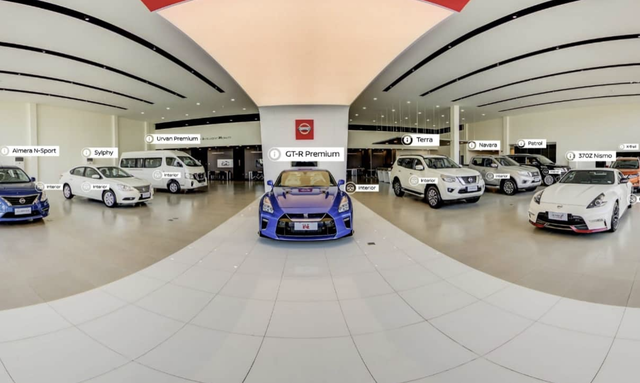
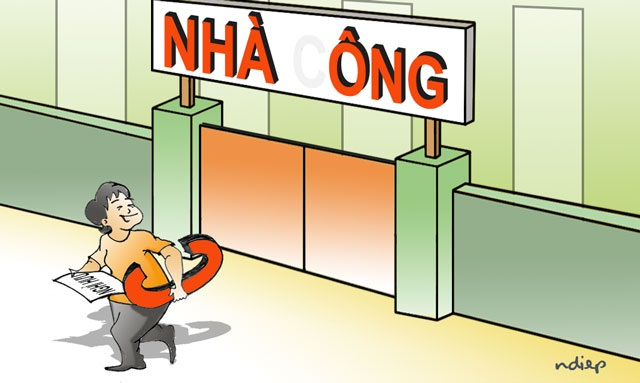

Messi đòi rời Barcelona trong cuộc gặp với HLV Koeman
2 giờ trước
Khó có "mưa" điểm 10 ở bài thi tổ hợp Khoa học tự nhiêu (Dân trí) - Dự kiến phổ điểm chủ yếu
của bài thi tổ hợp từ 5-7 điểm. Ở môn Vật lý và Sinh học, mức 8-9 đ iểm sẽ ít có "mưa" điểm 10 vì sự
phân hoá của đề khá cao.
Tuyển sinh | 12 phút trước
(Dân trí)- Sáng 10/8, Bộ Y tế công bố thêm 2 ca mắc Covid-19 tử vong. Đến nay, Việt Nam ghi nhận 13
trường hợp tử vong do dịch bệnh này.
Sức khoẻ | 4 giờ trước
(Dân trí) - Ngày 10/8, Giám đốc Bệnh viện Phổi Đà Nẵng cho biết, 4 bệnh nhân Covid-19 đầu tiên của
thành phố trong đợt dịch này được công bố khỏi bệnh.
Sức khỏe | 2 giờ trước
(Dân trí) - Thị trường xe Việt chứng kiến sự đa dạng về xuất xứ các mẫu xe, nhiều nhất là xe Nhật,
Hàn, Mỹ, EU... Trung Quốc dù là nước sản xuất xe lớn của thế giới nhưng xe nước này vẫn khó "sống" ở
Việt Nam.
Kinh doanh | 5 giờ trước
Nguyên
Tổng Bí thư Lê khả Phiêu - người lãnh đạo dám chịu trách nhiệm!
Chính trị | 6 giờ trước
Điện một giá: Gần 2.900 đồng/kWh, chuyên gia nói hơi cao, ai sẽ được lợi?
Chính trị | 5 giờ trước
Gửi em, cô gái của chị vừa trải qua kỳ thi quan trọng trong đời.
Nhịp sống trẻ | 1 giờ trước
Vắng khách tới đại lý vì dịch bệnh, Nissan Philippines tung chiêu.

Ô tô - Xe máy | 25 phút trước
Bà cựu Thứ trưởng ơi, xin đừng làm khó Thủ tướng nữa!

Blog | 45 phút trước
Mỹ: Phụ huynh “đau đầu” lựa chọn hình thức học cho con em trong năm học tới
Du học | 50 phút trước
Cụ ông 90 tuổi công khai giới tính thật sau nhiều thập kỷ giữ bí mật.
Chuyện lạ | 45 phút trước


/2020/08/25/su-dung-ma-tuy-trong-khach-san-1598340650545.jpg)